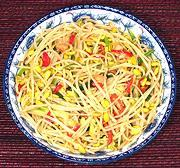

|
Bean Sprout Salad with Salt FishMalaysia | ||||
| Serves: Effort: Sched: DoAhead: |
4 salad ** 20 min Prep |
Light and easy to make, this flavorful dish can be served either as one of several Asian dishes with rice, or as a salad or side in a more Western context. It works well either warm or at room temperature. | |||
|
14 3 2 2 2 1 2 1/4 1/4 |
oz oz cl T T c t |
Bean Sprouts (1) Scallions Salted Fish (2) Garlic Red Chili (2) Oil Oyster Sauce Water Salt |
Make: - (20 min)
|